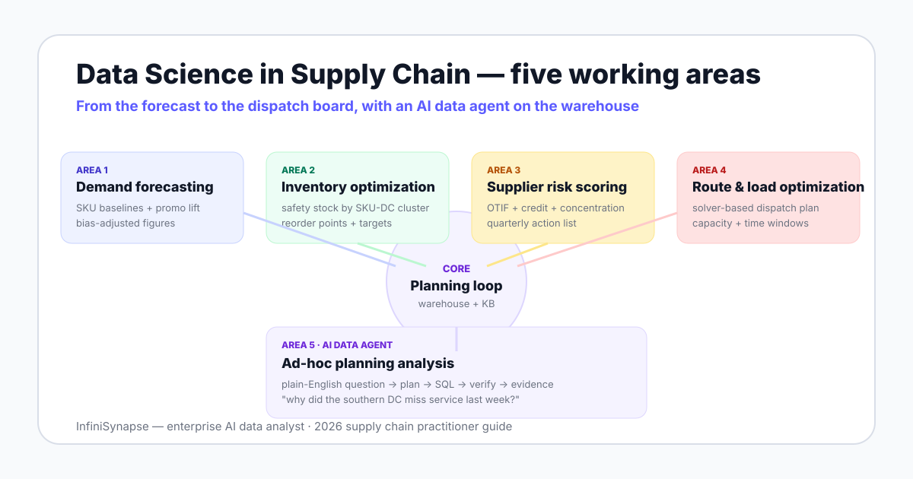

Data Science in Supply Chain in 2026: Five Working Areas and Where AI Agents Fit
A practitioner's map of where data science actually shows up in supply chain — demand forecasting, inventory optimization, supplier risk scoring, route AI, and the new ad-hoc planning layer where AI data agents sit.
AuthorInfiniSynapse Research, supply chain analytics review team
Published2026-06-28 · Last verified 2026-06-28 · Next review 2026-09-28
Evidence baseMIT CTL publications, Gartner supply chain research, BLS data scientist outlook, NIST AI RMF, vendor docs (SAP IBP, Kinaxis, o9, Blue Yonder).
Disclosure: This page is published by InfiniSynapse, which builds an enterprise AI data analyst that connects to the warehouses behind supply chain planning stacks. We describe InfiniSynapse where the ad-hoc planning layer is the topic, but the five working areas, scoring frameworks, and decision rules are written so planners can use them to evaluate any vendor — including against us.
TL;DR
Data science in supply chain shows up in five working areas: demand forecasting, inventory optimization, supplier risk scoring, route and load optimization, and ad-hoc planning analysis.
Most teams get the first four from a vendor (planning suite, optimizer, scorecard tool) and own the fifth themselves — the questions that never made it into the planning system.
AI data agents are the new entrant for that fifth area. They connect to the warehouse behind the planning suite, retrieve business definitions, plan the analysis, run SQL, and return an answer with an evidence trail you can defend in S&OP.
The two failure modes worth budgeting against are: a forecast that overfits last year's promos, and an AI tool that runs SQL without retrieving what the business actually means.
Direct answer: where does data science fit in supply chain in 2026?
Data science in supply chain sits in five working areas — demand forecasting, inventory optimization, supplier risk scoring, route optimization, and ad-hoc planning analysis. Vendors handle most of the first four. The fifth, where planners ask open-ended questions across the warehouse and the planning system, is where AI data agents now sit.
Why supply chain is a sweet spot for data science in 2026
Three forces meet in supply chain that exist almost nowhere else in the same combination. First, the data is dense and structured — every order, shipment, receipt, and inventory snapshot is recorded. Second, every decision is a constrained optimization with a clear cost function — too much inventory ties up working capital, too little loses revenue. Third, the planning cycle is short enough that a better model pays back fast. The U.S. Bureau of Labor Statistics projects data scientist roles growing 36% from 2023 to 2033, and supply chain is one of the deepest hiring categories inside that growth.
That density is why a tooling map matters more than a tool ranking. The same warehouse table — say, shipment_lines — feeds a forecast, an inventory policy, a supplier scorecard, a routing solver, and a planner's ad-hoc question on a Tuesday morning. Each of those reads the same data through a different layer of the stack.

The five working areas of data science in supply chain
Area 1 — Demand forecasting
The oldest application and still the highest-ROI one. A modern demand forecast blends statistical baselines (exponential smoothing, ARIMA), machine learning models (gradient-boosted trees, deep models for long-tail SKUs), and exogenous signals — promotions, weather, macro indicators. The point of the model is not the lowest MAPE on paper; it is the lowest forecast bias on the SKUs that matter to working capital. Forecasting is also the layer where overfitting hurts most, because last year's promo plan rarely repeats verbatim.
Area 2 — Inventory optimization
Once the forecast exists, inventory optimization turns it into a policy: how much to hold at each node, at what reorder point, with what service-level target. The math is well known — newsvendor models, multi-echelon optimization — but the constraints are company-specific. The shift in 2026 is that more teams set inventory policy by SKU-location cluster rather than a single corporate service level, because the second approach pays for safety stock the customer never notices.
Area 3 — Supplier risk scoring
A working supplier scorecard combines four signal families: operational performance (on-time-in-full, defect rate, lead time variance), financial health (credit and payment signals), concentration risk (share of spend and single-source flags), and geopolitical or weather exposure on shipping lanes. The output is a category review and a quarterly action list — not a dashboard nobody opens. The hardest part is not the model; it is keeping the supplier master clean enough for the model to read.
Area 4 — Route and load optimization
The classical operations research domain. Vehicle routing problems, bin packing, and load consolidation all run through solvers — open source (OR-Tools) or commercial — that produce an executable plan for the dispatch team. The data science contribution sits in two places: feeding the solver with better demand and lead-time estimates, and post-running route deviations to find systemic issues (a lane that always runs 90 minutes late means the planned travel time is wrong).
Area 5 — Ad-hoc planning analysis
The newest area and the only one that targets open-ended questions directly. "Which categories drove the inventory build last quarter?" "Why did our southern DC miss service last week — was it a forecast miss or a transit issue?" "If supplier X goes down, which SKUs are exposed and for how long?" These questions never make it into the planning system. They are why a planner has 14 spreadsheets open at S&OP. An AI database query agent sits exactly here — it takes the plain-English question, retrieves business context, runs SQL against the warehouse, verifies the answer, and delivers an evidence trail.
Data science in supply chain examples
Working area
Concrete example
Typical input
Typical output
Owner
1. Demand forecasting
Weekly SKU forecast across 40 DCs with promo lift
Order history, promo calendar, weather
Forecast + bias-adjusted figures
Demand planner
2. Inventory optimization
Safety stock policy by SKU-DC cluster, 95% target
Forecast, lead time distribution, holding cost
Reorder points and order-up-to levels
Inventory planner
3. Supplier risk scoring
Quarterly category scorecard with action list
OTIF, defect rate, credit signals, news feed
Risk tier + supplier actions
Procurement
4. Route/load optimization
Daily dispatch plan minimizing miles and wait time
Orders, vehicle capacity, time windows
Routes and load assignments
Dispatch / logistics
5. Ad-hoc planning analysis
"Why did the southern DC miss service last week?"
Warehouse data + planning system + KB
Plain-English answer + evidence trail
Planner / S&OP lead
Read the table by row, not by column. The five areas are answers to different questions and rarely sit on the same vendor. A planner who owns Area 5 well outperforms a peer who has only Areas 1 through 4, because the open-ended layer is where most exception management actually happens.
Tools landscape: what each layer needs in 2026
Planning suites and ERP modules
SAP IBP, Kinaxis Maestro, o9, Blue Yonder, and Oracle SCM Planning anchor the canonical plan and the execution data. They are good at the structured planning loop and the integration with ERP. They are weaker at open-ended questions outside their data model and at cross-source joins to ad-hoc data (a CSV from a supplier, a tab from an analyst).
Modeling stack
Python (pandas, scikit-learn, statsforecast, prophet for forecasting; OR-Tools or commercial solvers for optimization), SQL on a warehouse such as Snowflake or BigQuery, and a model registry (MLflow or vendor equivalent) for productionizing forecasts and risk scores. This stack is where the differentiating math lives.
Warehouse and the answering layer
The warehouse holds prepared planning data — shipment lines, inventory snapshots, supplier scorecards, route plans — typically modeled with dbt or vendor equivalents. On top of that warehouse sits the answering layer: a BI tool for known dashboards and increasingly an AI data agent for the questions that never made it onto a dashboard. The retrieval-augmented generation pattern is what makes the agent layer different from a chatbot — it retrieves business definitions and schema before drafting SQL.
5
Working areas of data science in supply chain. Most planning shops own three or four and bring in vendors or an AI agent for the rest.
36%
Projected growth in data scientist roles, 2023-2033 (U.S.). Supply chain is one of the deepest hiring lanes inside that figure. Source: BLS
92.96%
Human engineer execution accuracy on the BIRD text-to-SQL benchmark — the bar AI agents still trail without retrieval and verification. Source: BIRD
Where AI data agents fit in the planning loop
Areas 1 through 4 assume the planner already knows the question. Area 5 does not. That is the structural shift: an agent retrieves business context and warehouse schema, plans the analysis, runs SQL, verifies the output, and explains itself. Applied to supply chain, this is the difference between a chatbot that hallucinates supplier names and an analyst that hands you a defensible exception report ten minutes before the meeting. The agent pattern is a system that directs its own tool use, not a prompt that types SQL.
The knowledge base binding contribution
The newest differentiator inside Area 5 is database + knowledge base binding. Each warehouse connection is paired with a curated knowledge base of business definitions — what "on-time" means at your company, which status codes denote a short ship, which SKU groups roll into the "core" category. The agent retrieves from the knowledge base as a tool call before running SQL. Without binding, an agent can correctly count status='STO_PARTIAL' rows but cannot explain that this status means a short ship that still counted as on-time for the customer.
A forecast that overfits last year's promos is a working-capital tax. A planning agent that does not retrieve business definitions is a credibility tax. Budget for both.
A decision rubric for adding a new layer
What is the question shape? Recurring, modeled, executable → planning suite or solver. Cross-source, ad-hoc, defended in a meeting → AI data agent on the warehouse.
Who owns the answer? If the planner owns it, the tool needs to give the planner an evidence trail they can read without a data scientist. If the data scientist owns it, the tool needs to produce models the planner can actually act on.
What audit posture do you need? Low → a notebook is fine. Medium → version-controlled models and BI dashboards with reviewers. High (regulated, finance-reviewed, board-visible) → plan review per query, read-only credentials, stored audit trail. Explainable AI data analysis spells out what the trail must include.
How fast does it pay back? Area 1 and Area 5 typically pay back inside a quarter. Areas 2 through 4 pay back inside two quarters if the warehouse is already clean.
Common mistakes when adding data science to supply chain
Treating MAPE as the goal. MAPE on aggregate looks fine while the SKUs that matter to working capital miss systematically. Track forecast bias by SKU-DC cluster, not just total MAPE.
Setting one service level for the whole company. A 98% target on a $5 SKU costs the same as a 98% target on a $5,000 SKU. Differentiate by margin and substitutability.
Building a supplier scorecard on a dirty supplier master. The model is fine; the upstream data is not. Spend the first month on master data, not on the algorithm.
Running an AI tool against the warehouse without retrieval. An LLM that drafts SQL without retrieving business definitions will pick the wrong status codes. The fix is binding the database to a knowledge base, not a bigger prompt.
Letting an AI-generated number reach S&OP without an evidence trail. A number without a plan, a source, and a verification step is a number you cannot defend when finance asks how you got it.
When this guide applies
You are picking, extending, or auditing a supply chain analytics stack in 2026
You want a working-area map, not a vendor leaderboard
You need to defend a tool choice to finance, security, or operations leadership
When it does not
You need a deep dive into one optimizer's tuning — that is a vendor topic
You are evaluating planning-suite contracts head-to-head — different post
You only need a one-time export of shipment data — a SQL client is enough
See an AI data agent run on your planning warehouse
Connect a warehouse read-only, seed a small supply chain knowledge base, and ask one open-ended question — a service miss, an inventory build, a supplier exposure. Review the plan, the queries, the verification, and the evidence trail before deciding whether Area 5 belongs in your stack.
Data science in supply chain is the practice of applying statistical models, machine learning, and optimization to planning decisions — what to forecast, how much to hold, which supplier carries risk, which route to send a truck on. It covers five working areas: demand forecasting, inventory optimization, supplier risk scoring, route optimization, and ad-hoc planning analysis.
What are the most useful data science in supply chain examples?
The four examples planners cite most often are SKU-level demand forecasts that beat a moving average, safety stock policies set by service-level rather than gut feel, supplier scorecards that combine on-time-in-full with financial signals, and route or load plans solved by an optimizer rather than by spreadsheet. The fifth — ad-hoc planning Q&A — is newer and is where AI agents now sit.
What tools are used for data science in supply chain management?
The working stack usually includes Python for modeling, SQL on a warehouse such as Snowflake or BigQuery for prepared data, an optimization library or solver for inventory and routing, a planning system or ERP for execution, and increasingly an AI data agent for the ad-hoc questions that never made it into the planning system. No single vendor covers all five layers.
Where does AI data analysis fit into supply chain work?
AI sits in two places: inside forecasting and optimization as the modeling layer, and on top of the warehouse as the answering layer. The answering layer is the newer of the two. An AI data agent connects to your warehouse, retrieves business definitions, plans the analysis, runs SQL, verifies the result, and returns an evidence trail you can defend in a planning meeting.
Do I need a data science team to start?
You can start without a dedicated team for two of the five areas: a tuned forecasting model from a vendor, and an AI data agent for ad-hoc planning questions, deliver value without a hiring cycle. The other three — inventory optimization, supplier risk scoring, and route optimization — need either an internal modeler or a focused vendor, because the constraints are too company-specific to outsource blindly.
How is supplier risk scoring built in practice?
A working supplier scorecard combines four signal families: operational performance (on-time-in-full, defect rate, lead time variance), financial health (credit and payment signals), concentration risk (share of spend and single-source flags), and geopolitical or weather exposure on shipping lanes. Scores roll up to a category review and a quarterly action list — not just a dashboard nobody opens.
What is the difference between a planning system and an AI data agent?
A planning system holds the canonical plan and the execution data. An AI data agent answers questions about that data and the surrounding context. The planning system says what the plan is; the agent helps you investigate why an exception happened, what changed between two cycles, or which scenario to bring to the S&OP meeting. The two are complements.
What does it look like when AI data analysis goes wrong in supply chain?
The two recurring failure modes are: an AI tool that generates SQL against your warehouse without retrieving business definitions, so it counts the wrong status codes, and an AI tool that has no verification step, so a one-off question becomes a number quoted at the next S&OP meeting with no evidence trail. Both are governance failures — the fix is plan review, read-only access, and a stored audit trail.
Methodology and review notes
Last updated: 2026-06-28 · Next scheduled review: 2026-09-28
Working areas on this page are grounded in MIT Center for Transportation & Logistics publications, public Gartner supply chain research, vendor documentation (SAP IBP, Kinaxis, o9, Blue Yonder, Oracle SCM Planning), open-source projects (Google OR-Tools, statsforecast), public benchmarks (BIRD), and the NIST AI Risk Management Framework. The five-area split is a working distinction; some products straddle two or three areas.
Conflict of interest: InfiniSynapse publishes this guide and sells in Area 5 (ad-hoc planning analysis on the warehouse). To reduce bias, the page includes scenarios where Areas 1-4 win outright, a decision rubric that pushes against over-buying, and external sources for every numeric claim.
Update cadence: Reviewed every 90 days for vendor changes, benchmark figures, and terminology.